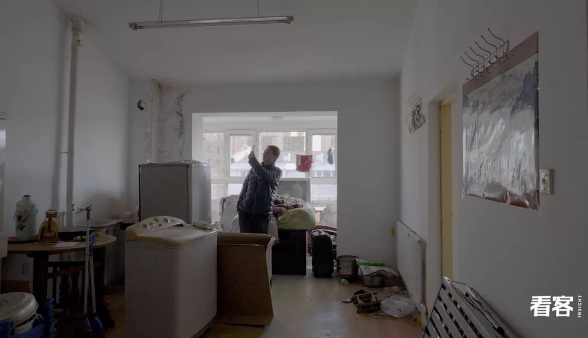
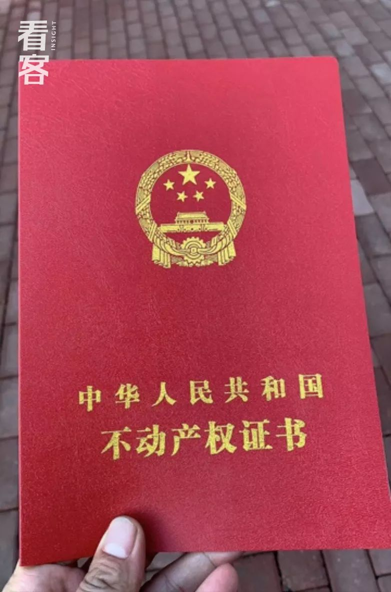
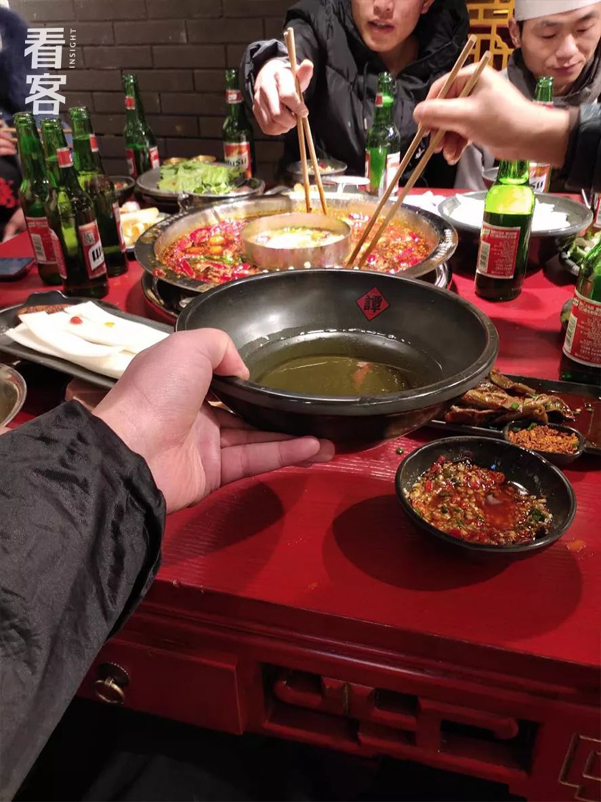
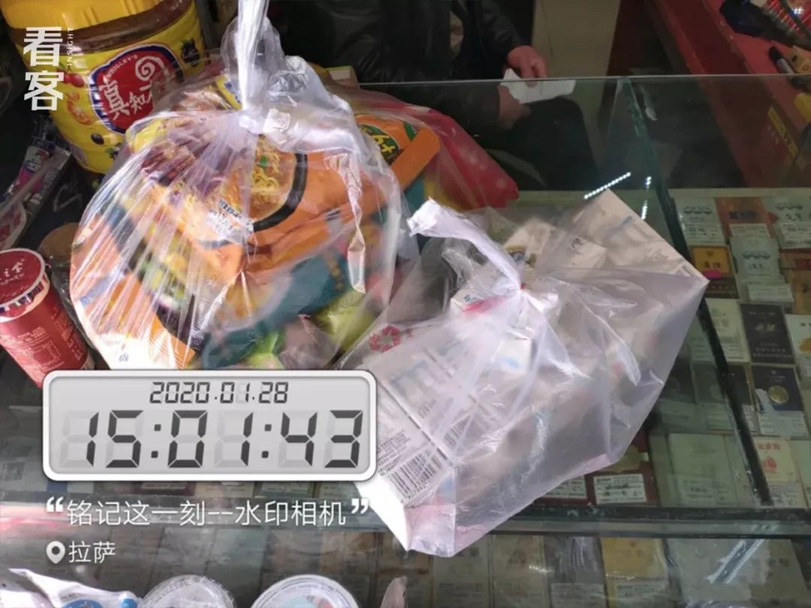
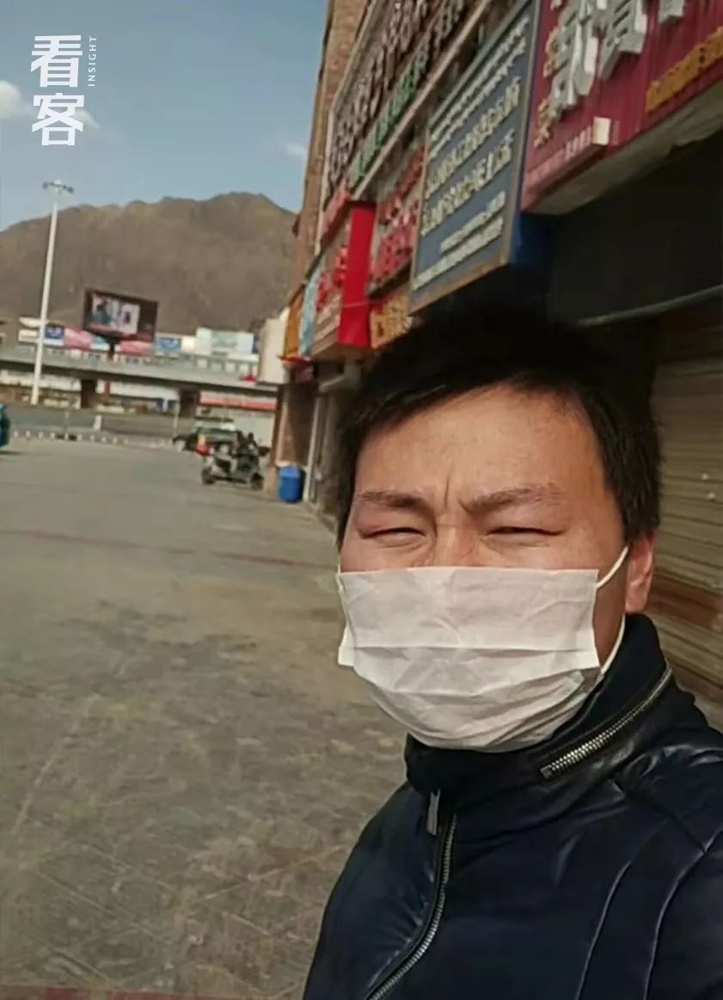
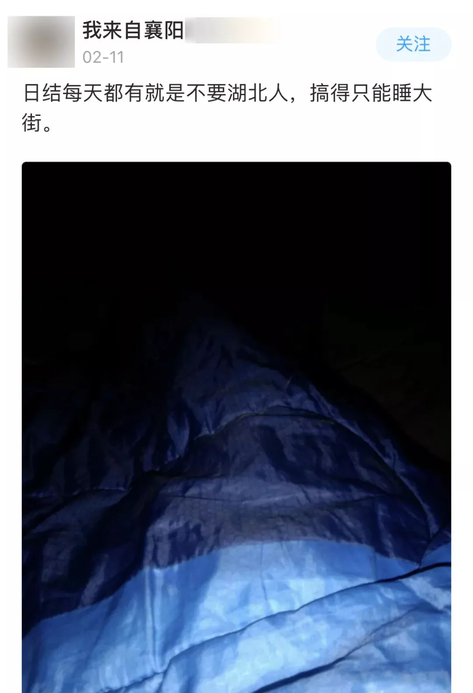
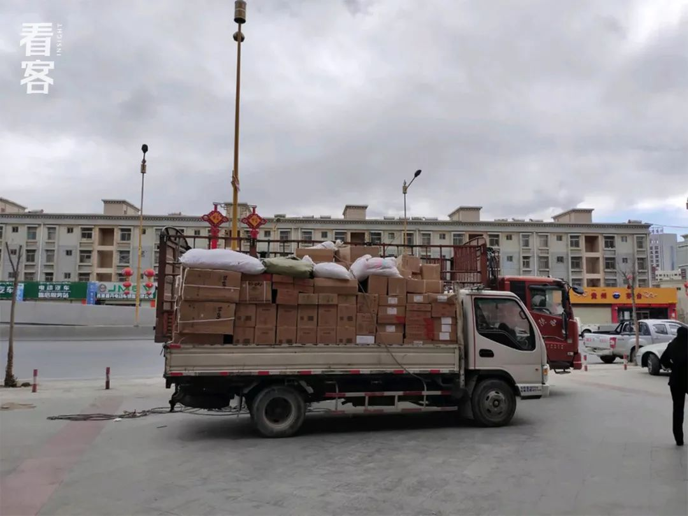
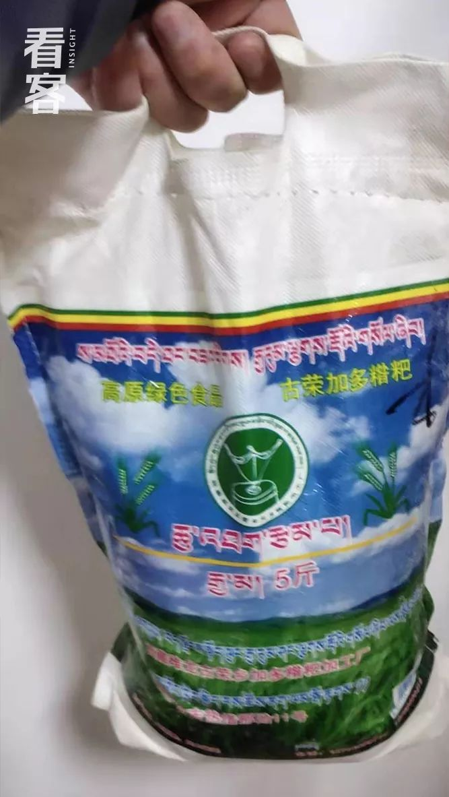
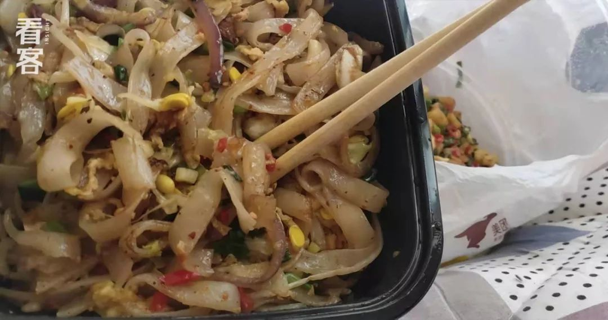
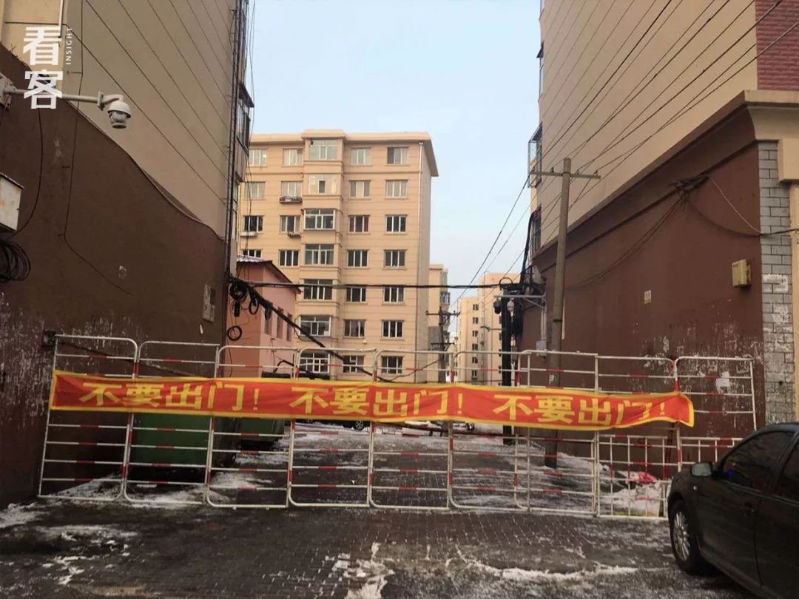

数说疫情0222：武汉艰难拉锯两周后反守为攻，其他地区继续向好
原文链接 备份链接 为什么我们说武汉战局出现了反守为攻的转机？主要有3点 文 |《财经》数据研究员 徐进 图 |《财经》视觉中心 编辑 | 谢丽容 一、 累计确诊病例：趋势现“顶” 截至2月21日24:00，全国累计报告确诊新冠肺炎病 …
以下文章来源于看客inSight ，作者看客

早知道这样，就不买房了。
新冠肺炎肆虐，几乎影响着每一个中国人的生活，对于湖北小哥许康来说，也不例外。
去年年底，我们报道了许康的鹤岗买房故事，“奔波了大半个中国“，他终于有了自己的家。

3万元买套房
原本，他计划着努力赚钱，争取2020年的夏天回到鹤岗给新家搞装修。
然而，突如其来的疫情将计划彻底打乱。
疫情爆发后，许康失业了，又因为“42开头”的身份证（湖北地区）迟迟找不到新工作。
如今，贷款和日常开销成了悬在头上的剑，他“饭都快吃不上了”，不得不执行那个最坏的打算：把房子卖掉。
一
我以为买完房就好了
我叫许康，今年27岁，是湖北荆州洪湖人。
去年11月，我跨越4000公里，从拉萨赶到鹤岗买房，看了一套就定下了，总价3万元。

我在鹤岗买的房子。
11月13号，我拿到梦寐以求的房本，还在房产中介那里碰到了b站网红敬汉卿。
当时他正签合同，买的房子据说是用来抽奖送粉丝的。

我还和b站大网红合了张影。
奔波了大半个中国，终于有了自己的家。
说实话，我挺开心的。那天我还写了首诗，发在了我建的鹤岗买房讨论群里：
三万买套房 有本心不慌
出门千里外 逍遥做仙人
唯一美中不足的是房子要装修，但我暂时没钱，交完全款后，我兜里就剩几百块了。
另外，还有一万四的网络借款等着我还。
因为来的时候，我只有两万多现金，不借钱根本买不了。

房本
房本下来了，我一天没住就走了。我想尽快找份工作，赚钱、还账。
我是做餐饮切配的，也就是俗话说的“墩子”，鹤岗工资太低，只能回拉萨找工作了。

11月20日，我原路返回拉萨。这个我工作了六年的城市，阳光一如往常地好。
拉萨的大神特别多。
找工作那几天，我住在8块钱一晚的客栈里。这边有很多不上班、一天就吃俩馒头的人。
一天一顿，一躺一天。说实话，我受不了这样。
几经辗转，我找到了一份火锅店的工作，月薪五千，包食宿。
当时我很有信心，只要踏实干，一万四的借款还下来是完全没问题的。

当你有了压力之后，你才有动力，你的动力越足，你赚钱的姿势就越帅。
工作定了，我的心也安稳了不少。
数数手指头，还有不到30天就过年了。
身为“流浪吧”老哥，过年是不会回家的，但趁着春节期间赚点加班费，生活还是挺有盼头。

1月4号，拉萨迎来2020年的第一场雪。
但你知道，你永远无法预估明天。
1月20日晚，我下班回到宿舍，发现武汉疫情已通报全国。钟南山院士在采访里说，肺炎存在人传人的情况。
当时，我觉得问题应该不大。结果到了23号，武汉突然宣布“封城”。
这座我曾经生活过几年的城市，一下子成了漩涡的中心，在疫情地图上红得发黑。
我的亲戚都在武汉的厨房上班，但他们的情况我不太清楚。
疫情爆发后，我也没和老家的父母联系，我和他们的关系一直都不是很好。二十几年来，我已经习惯一个人过所有节日。

除夕夜，我和工友聚餐，迎接新年。
大年三十那晚，买房群里一片过年的热闹气氛，不断上升的感染人数似乎和我们无关。
人们互相说着“新年好”，我也祝他们“在新的一年里有鼠不尽的快乐”。
谁都不曾想到，十多天后，我会陷入如此境地。
二
湖北打工仔太难了
武汉陷入阴霾，除夕过后，拉萨也变得没什么生意。店里一天就坐几桌，一闲下来，我就刷刷新闻。
当时西藏还没有一例患者，被网友称为“全国最后一片净土”，结果几天后，拉萨就有了第一例输入性病例。
很快，西藏的防控肉眼可见地严密起来。

街上空无一人，大昭寺也没有朝拜的了，只有超市还开门迎客。
1月27日，拉萨开始买不到口罩。同一天，餐饮店禁止营业的通知下来了。
这时我才意识到，疫情可能有些严重了。
我出门买了100块的方便面，想着先把命钓着，过几天看看情况再说。

头几天，我都无心做其他事，只能低头刷着手机。
那段时间有消息传出，说封城前有500万湖北人出省，随之而来的是各种骂声：“湖北人吃蝙蝠，是想飞啊？”
有人住酒店被驱逐；
有人开着“鄂A”牌照的私家车被围堵；
似乎只要是湖北人，人人自危。
相比起那些流落街头的同乡，我应该算幸运 ——
当下进出小区还不成问题，只要测一下体温，不发烧就行。我最担心的是查身份证，别人一查，就容易解释不清。
那几天，我都在出租屋里呆着，饿了就叫楼下超市送几包方便面，尽量避免不必要的麻烦。
迫不得已要出门，我就说四川话，不过，我的四川话实在是太蹩脚了。
最让我震惊的是，居然有记者为了蹭热度，在报道买房的文章里把我写成“湖北武汉人”。
这个时候还要落井下石，气死我了！

偶尔一次出去放风。拉萨早就买不到n95了，我戴的是薄薄的一层纸口罩。
隐性歧视之外，一个更切实的问题横在我面前。
不开工就没收入。复工遥遥无期，吃穿用度哪个不花钱？再加上还款日迫在眉睫，我必须再去找份工作。
在朋友的介绍下，我先是在网上搞电商推广，结果三天过去了，一毛钱都没赚到。
还有人建议我做游戏代练，但代练需要电脑，网吧全关了，我只有手机，做不了。
活人还能找不到工作？我就不信了。
据我所知，目前拉萨还有餐饮店在做外卖（政府不允许堂食，但允许合规的外卖）。
2月8号那天，我在网上找到了招工信息，心情忐忑地拨电话过去。
“你好，你们在招工吗？”
对方说招的。但可能是听我口音不对（南方口音），对方立刻警惕起来，问我是哪里人。
我如实回答，结果他连忙改口，说暂时不招了，“等疫情过去再说。”
就这样，我打了七、八通电话，得到的回复都出奇地一致。
网上爱心满满，现实人人避嫌。这是我有生以来第一次觉得，身份证42开头的太难了！

流浪吧也有不少落难的湖北兄弟，明明没回过湖北，却被房东收回房子，出去找工作也没人要，只能睡大街。图源：流浪吧
没办法，眼下没有一个行业，甚至没有一个人是好过的。
打工的一停没收入，生意人一停就是一屁股债。
事实上，我所在的火锅店才刚开业不久。开店时老板投入了300万，为了春节又屯了80万的食材。
年关这一闹，老板也是血本无归。

疫情爆发前，我们还帮忙卸了一大车火锅底料。
因为节前屯的一些食材还在后厨放着，我特意找了一天去清理，把那些已经开始变质的扔掉，又把一些还能吃的装进冷柜，希望开业后还能用吧。

坏了的火锅底料
三
再也不想吃泡面了
找工作不成，日子逐渐拮据。
我不得不把每天的花销严格控制在十几块以内，小心翼翼地掰碎了用。
以前我一个不可逾越的信条：一个人过生活，鸡蛋是必备的。哪怕没肉吃，鸡蛋也要有的。
如今这个信条彻底被推翻，我先是扎扎实实地吃了半个月泡面。

生活就是一碗没加调料的方便面。
同样口味的，一周内不能吃第二次，否则会吐。我每天换着吃，现在是什么口味都吃过。
也有群友提议我吃挂面，说挂面更便宜，经吃，有营养。
但我屋里没有煮具，只能回他一首打油诗：
一天三餐只有面，康帅傅来见。
泡面吃到了极致，我又打起了糌粑的主意。

我同事回家过年了，给我留下了一袋青稞面。
糌粑是藏族人的伙食，原则上，得用酥油把青稞面捏成团，加一些酥油、牦牛肉一起吃才有味道。
但条件不允许的情况下，也可以用开水泡着吃。

我只吃了一顿就投降了，实在是太难吃。
偶尔我会点一次外卖改善伙食。
有天我冒着斥巨资的风险，点了一份鸡蛋炒河粉，这是半个多月以来吃过最好吃的东西了。

真他*的香
宅在家的这段时间，我成功瘦了十多斤 —— 从买房时的150多，掉到了现在的140斤不到。
时间变得无比漫长。每天除了吃喝拉撒就是看剧，除此之外，我找不到其他方法来驱逐我对明天的恐惧。
四
饭都吃不起了，还要什么房子
疫情爆发至今，已经过去30多天。
拉萨从未如此安静。
空旷的路上，没有行人，没有狗吠，也没有汽笛声。
失眠成了常态。睡不着的时候我老在想，口袋里的钱能用到什么时候？债什么时候才能还上？自己为什么要这样活着？
“早知道我就不买房了。”
这样的念头不只一次从我脑海闪过。

站在房间内唯一能看到的风景。
事实上，我早就考虑过卖房的事。
只不过不是因为资金紧缺，而是想着明年年底如果存够5万，就把现在这套卖了，换个更好的。
也并不着急，赚够了钱就换，赚不够就把小房子装修装修，在外面漂累了，也算是有个温暖的窝。
只是万万没想到，肺炎来得这么突然，曾经不顾一切实现的买房梦，如今成了压垮我的最后一根稻草 ——
在贷款和日常花销的双重夹击下，我的银行卡已经空空如也。
用浪吧老哥的话来说：要稳不住了。

银行卡连3元服务费都扣不起了。
走投无路之下，我决定执行之前最坏的打算：把房子卖了。
中介劝过我不要冲动，说“以后会升值”。但眼下，度过寒冬才是要事。
房子挂出来后，有7、8个人打来问过。价格能不能低点啊，什么楼层啊，有没房本啊……都是这类问题。
但大家都很默契，谁也没有下决心买。
也是，这当口，都在想着生存，谁还有心思考虑房子？
“等疫情过后再看看。”我又一次听到这样的答复。

有群友发来鹤岗的街景。如今我没有路费，也回不去了。
2月11号，买房群里的鹤岗土著给我发来了这张图：

“鹤岗支援孝感——湖北有难，我们出征”
很感谢他们，我知道他们在帮我们过关。
希望疫情快点好起来吧，也希望大家不要一刀切地排斥湖北同胞 ——我知道很难，毕竟疫情是从湖北爆发出来的（其实我也想骂那些吃野味的人）。
但很多无辜的同胞也因此受到牵连。他们和我一样，不过是为了一宿三餐而奔波的生活中人。
这就是我最大的愿望。
供图 许康 | 编辑 简晓君
文章版权为网易看客栏目所有


点击以下「关键词」，查看往期内容：
群聊魔鬼 | 月嫂回忆录 |家暴 | 健身房的坑 | 生子丸
考公| 萌宠博主 | 82年的金智英 | 女大学生的毒虫男友
大牛失业 | 卧底狱警 | 娶妻改命 | 中年男人的窝囊死亡
职校老师 | 产科记事 | 改嫁 | 寻业中国 | 三大队 | 股市梦碎
扶弟魔 | 末路狂花 | 下乡扶贫| 外卖小哥 | 杀死我的女神
东北相亲 | 我放弃了科研 | 网红女同学 |与巨婴离婚的女人

原文链接 备份链接 为什么我们说武汉战局出现了反守为攻的转机？主要有3点 文 |《财经》数据研究员 徐进 图 |《财经》视觉中心 编辑 | 谢丽容 一、 累计确诊病例：趋势现“顶” 截至2月21日24:00，全国累计报告确诊新冠肺炎病 …
原文链接 备份链接 岛语 非常时期，武汉成了全国人民挂念、祈福的城市。封城后，武汉人民的真实生活是什么样？ 武汉在发生哪些变化？ 正和岛自1月26日起特别推出“叶青专栏”。叶青是一位定居武汉40年的市民，也是一名学者和官员。在过往多期的专 …
原文链接 备份链接 _ 武汉新增确诊病例和新增治愈病例今日跨过“黄金交叉”点，从此全国包括武汉在内将逐日加大释放以医院病床床位为核心的医疗资源。但也应注意到2月20日数据出现两个异常：一是非湖北地区新增病例出现巨大反弹；二是国家卫健委与湖 …
原文链接 备份链接 文 |《财经》数据研究员 徐进 图 |《财经》视觉中心 编辑 | 谢丽容 1. 新增病例：国内非湖北地区下降态势坚定 2月13日0—24时，全国新增确诊病例5090例，国内非湖北地区已经连续十天下降，超过两个平均潜伏 …
原文链接 备份链接 非常时期，武汉成了全国人民挂念、祈福的城市。封城后，武汉人民的真实生活是什么样？ 正和岛自1月26日起特别推出《叶青：我在武汉疫区的第N天》专栏。叶青是一位定居武汉40年的市民，也是一名学者和官员。接下来的一段时间， …